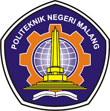

TEKNIK INFORMATIKA
Pada tahun 2010 berdasar kebutuhan masyarakat dan industri terkait Program Diploma IV bidang Informatika maka Politeknik mengembangkan Program studi Diploma IV Teknik Informatika yang saat itu masih bergabung dengan Program studi Program D-IV TI hanya terdiri dari 40 Mahasiswa, namun pada tahun 2015 jumlah meningkat menjadi Program D-IV TI telah mengalami peningkatan menjadi 545 Mahasiswa.
Perkembangan jumlah mahasiswa yang sangat pesat baik di Program Studi D-III MI maupun D-IV TI mendorong pimpinan di Politeknas untuk memerivatkan kedua program studi tersebut dalam satu organisasi jurusan berbeda, terpisah dari Jurusan Teknik Elektro. Pada tahun 2016, kedua program studi ini disebut menjadi Jurusan Teknik Informatika berdasarkan SK Direktur Nomor 53 dalam rangka peningkatan mutu pengelolaan dan optimasi sumber daya dibentuklan Jurusan Teknologi Informasi (JTI) dengan prodi D-III MI dan D-IV TI.